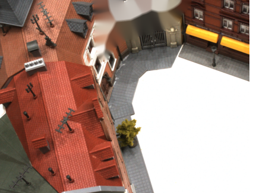
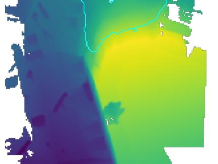
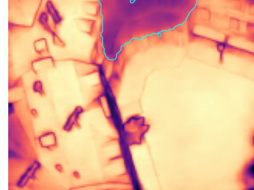
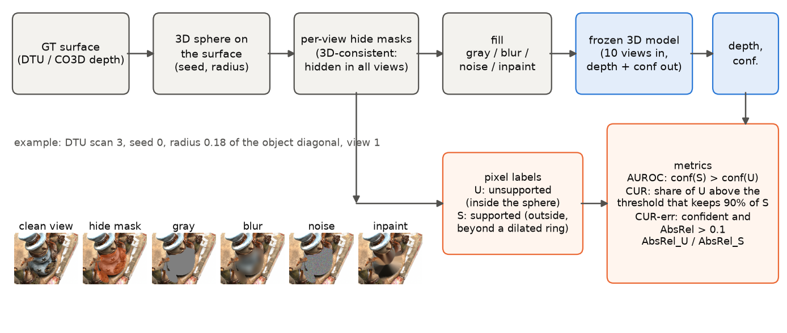
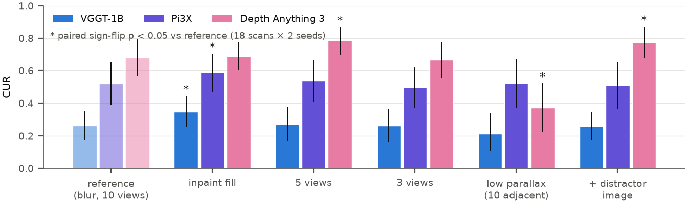
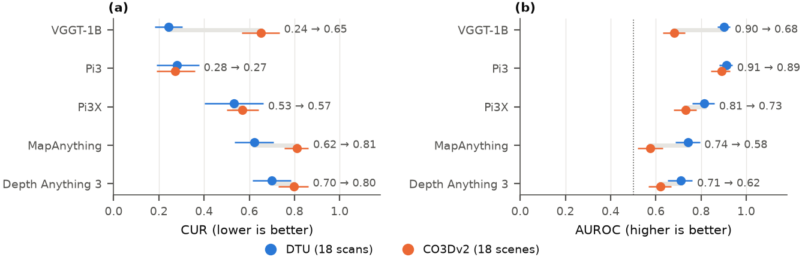
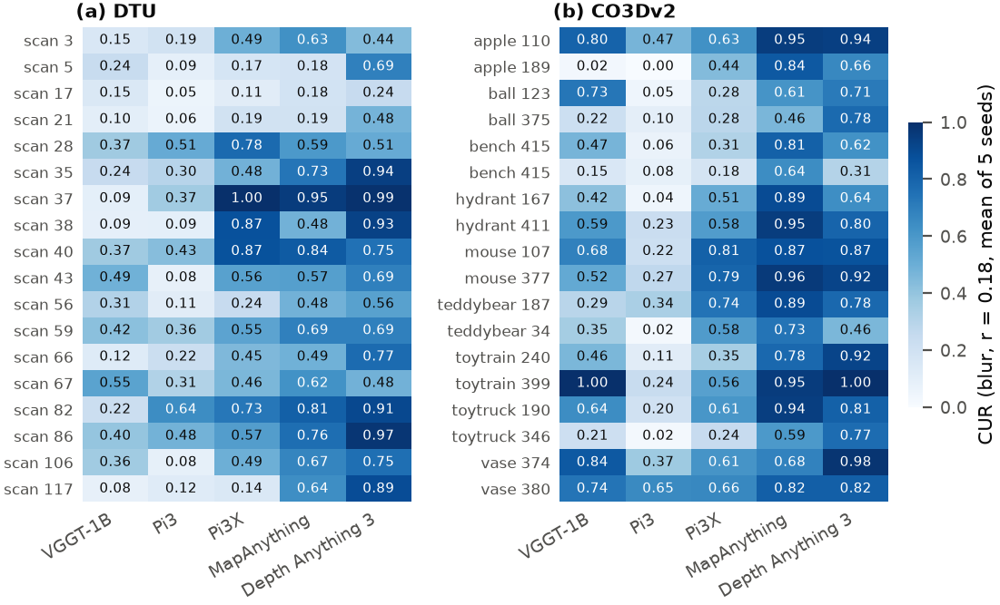
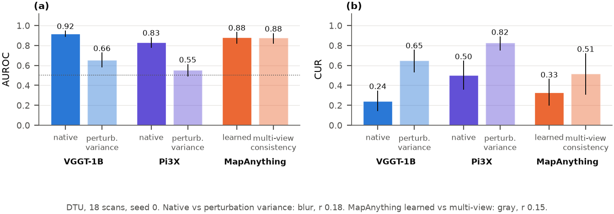
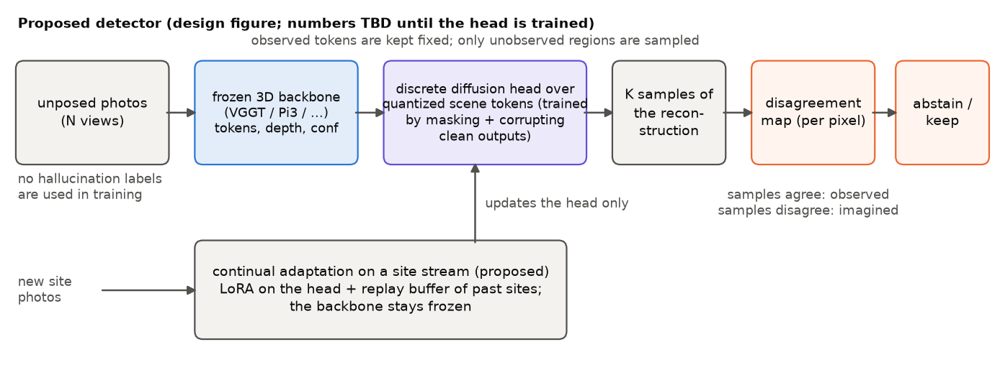

Observe, Imagine, Abstain
When a 3D model has not seen a surface, does it say so? We measured five of them. Mostly, no.
Hallucination-aware 3D reconstruction with discrete diffusion and continual adaptation. Anonymous submission to CVPR 2027.



The finding
Feed-forward 3D models such as VGGT, Pi3 and Depth Anything 3 return geometry at every pixel, including pixels whose surface appears in no photograph. The training objective rewards a plausible guess, so they learn to guess. The guess is often good. The trouble is that the confidence map, the one signal you get, does not tell you which parts were observed and which were guessed.
We define a predicted point as hallucinated when it lies on a surface that no input view shows, and we measure how much of that geometry survives a confidence filter tuned to keep 90% of the observed geometry. We call that the Confident-Unsupported Rate, or CUR. Zero means the model abstains where it should; 0.9 is what a blind guesser gets.
lab rig (DTU)phone captures (CO3Dv2)share of unseen geometry that passes the filter; pooled over blur and noise fills, five mask seeds, two radii
Three things stand out. The leak is large for every model. It is larger on phone captures than on the lab rig for three of the five, and only Pi3 behaves the same on both. And the imagined geometry is usually accurate: the depth error inside the hidden region is about the same as outside it. The models are good at imagining. They are bad at saying that they did.
How the labels come for free
Hallucination labels are expensive if you annotate them. We get them by construction.
- Place a sphere on the ground-truth surface of a scene.
- Hide every pixel, in every view, whose true point lies inside the sphere. The hidden region is therefore consistent in 3D: no camera sees it from any angle.
- Fill the hole with gray, a blur, noise, or an inpainting, so that the result is not an artefact of one kind of patch.
- Run the model on the filled views. Pixels inside the sphere are unsupported; pixels well outside it are supported; a thin ring in between is ignored.
- Score the model's own confidence: does it rank supported above unsupported (AUROC), and how much unsupported geometry passes a 90% filter (CUR)? Score the same pixels under clean input as a control.

Is it just the patch?
The fair objection is that the model is reacting to a visible patch rather than to the absence of a surface. Four stress tests say otherwise. An inpainted fill, which leaves no seam, raises the leak for VGGT and Pi3X rather than lowering it. Dropping from ten views to three changes nothing, so having less evidence to cross-check does not make the models less sure. Under low parallax, Pi3X's imagined depth gets worse while its confidence stays put. Depth Anything 3 is the odd one out: a distractor image raises its leak and low parallax halves it, which suggests its confidence tracks something other than observation.

Lab rig versus phone captures
Everything in the protocol was frozen on DTU before CO3Dv2 was touched: the same radii, fills, thresholds and seeds. The ranking still changed. VGGT, joint best on DTU, leaks 65% of unseen geometry on everyday objects filmed with a phone and is almost blind under a noise fill. Pi3 transfers; the rest do not.


The cheap fixes do not work
The first thing anyone tries is to perturb the input a few times and take the variance. On both backbones we tested, that is much worse than the native confidence while costing four forward passes: the imagined geometry is stable under perturbation, so its variance looks like everyone else's. MapAnything's multi-view consistency confidence leaks more than its learned one. The disagreement has to come from somewhere other than the input.

What we propose
We do not want to stop these models from imagining; that is what makes them useful. We want them to say when they do. A frozen backbone feeds a small discrete diffusion head over quantized geometry tokens, trained by hiding regions of the backbone's own output and recovering them, with no hallucination labels. At test time the head draws several samples. Where the samples agree with the backbone, the geometry is observed. Where they agree with each other but with nothing observed, it is imagined. Everywhere else the model abstains. You see three colours instead of one confidence map.
Low-rank adapters with a small replay buffer let the head follow a stream of new sites without forgetting old ones.
pending The method is specified and its pass condition is pre-registered: it must beat native confidence on AUROC and CUR at equal compute, paired test over scenes. Its numbers do not exist yet and nothing on this page pretends they do.

Demo
The first part runs the masking protocol and consistency checks live on real DTU and CO3Dv2 data and prints the numbers the code returns. The second part replays the model outputs recorded on a single T4 and the matching rows of the result tables. Three minutes, no audio.
What is measured and what is not
| Done, every number from a logged run | Not yet |
|---|---|
| Benchmark on DTU and CO3Dv2, five models, three fills plus inpaint, stress tests, two failing cheap baselines, intervals and paired tests for all of it. About eight GPU hours on one T4. | The diffusion head and its ablations, continual adaptation, the heritage photo study, VGGT-Omega (gated checkpoint), and a fuller perturbation baseline. These need a larger GPU and model access. |
The full run log, including the runs that failed and every correction made to a reported number, ships with the code.
Headline table
| model | AUROC DTU | AUROC CO3Dv2 | CUR DTU | CUR CO3Dv2 |
|---|---|---|---|---|
| VGGT-1B | 0.903 | 0.681 | 0.242 | 0.651 |
| Pi3 | 0.912 | 0.891 | 0.281 | 0.272 |
| Pi3X | 0.813 | 0.732 | 0.532 | 0.570 |
| MapAnything | 0.743 | 0.576 | 0.622 | 0.810 |
| Depth Anything 3 | 0.711 | 0.620 | 0.701 | 0.797 |
Pooled over blur and noise fills, 18 scenes per dataset, five seeds, two radii. Intervals and per-fill cells are in the paper.
Cite
@inproceedings{observeimagineabstain2027,
title = {Observe, Imagine, Abstain: Hallucination-Aware 3D Reconstruction
with Discrete Diffusion and Continual Adaptation},
author = {Anonymous},
booktitle = {CVPR submission},
year = {2027}
}